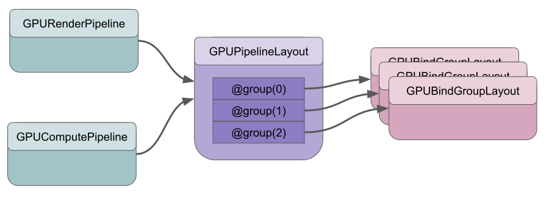

绑定组布局用于使 WebGPU 能够简单高效地将绑定组与计算和渲染管线进行匹配。
管线（如 GPUComputePipeline 或 GPURenderPipeline）使用 GPUPipelineLayout，它定义了 0 个或多个 GPUBindGroupLayout。每个 GPUBindGroupLayout 被分配到特定的组索引。

绑定组（Bind Groups）也是使用特定的 GPUBindGroupLayout 创建的。
当你调用 draw 或 dispatchWorkgroups 时，WebGPU 只需要检查：当前管线的 GPUPipelineLayout 上每个组索引的 GPUBindGroupLayout 是否与通过 setBindGroup 设置的当前绑定组匹配？这个检查非常简单。大多数详细检查发生在创建绑定组时。这样，当实际绘制或计算时，几乎不需要再进行检查。
如果你使用 layout: 'auto' 创建管线（本网站上的大多数示例都是这样做的），管线会自动生成自己的 GPUPipelineLayout 并用 GPUBindGroupLayout 填充它。
有 2 个主要原因不使用 layout: 'auto'。
你想要一个与默认 'auto' 布局不同的布局
例如，你想使用 rgba32float 纹理，但尝试时会出错。（见下文）
你想在多个管线中使用同一个绑定组
你不能将在 layout: 'auto' 的管线中创建的绑定组布局生成的绑定组用于另一个不同的管线。
layout: 'auto' 不同的绑定组布局 —— 'rgba32float'绑定组布局的自动创建规则在规范中有详细说明，但举一个例子……
假设我们想使用 rgba32float 纹理。让我们以纹理文章中第一个使用纹理的示例为例，该示例绘制了一个倒置的 5x7 纹素的字母 ‘F’。让我们更新它以使用 rgba32float 纹理。
以下是更改的内容。
const kTextureWidth = 5;
const kTextureHeight = 7;
- const _ = [255, 0, 0, 255]; // red
- const y = [255, 255, 0, 255]; // yellow
- const b = [ 0, 0, 255, 255]; // blue
- const textureData = new Uint8Array([
+ const _ = [1, 0, 0, 1]; // red
+ const y = [1, 1, 0, 1]; // yellow
+ const b = [0, 0, 1, 1]; // blue
+ const textureData = new Float32Array([
b, _, _, _, _,
_, y, y, y, _,
_, y, _, _, _,
_, y, y, _, _,
_, y, _, _, _,
_, y, _, _, _,
_, _, _, _, _,
].flat());
const texture = device.createTexture({
label: 'yellow F on red',
size: [kTextureWidth, kTextureHeight],
- format: 'rgba8unorm',
+ format: 'rgba32float',
usage:
GPUTextureUsage.TEXTURE_BINDING |
GPUTextureUsage.COPY_DST,
});
device.queue.writeTexture(
{ texture },
textureData,
- { bytesPerRow: kTextureWidth * 4 },
+ { bytesPerRow: kTextureWidth * 4 * 4 },
{ width: kTextureWidth, height: kTextureHeight },
);
运行时会得到一个错误。
我在测试的浏览器中得到的错误是：
- WebGPU GPUValidationError: None of the supported sample types (UnfilterableFloat) of [Texture “yellow F on red”] match the expected sample types (Float).`
- While validating entries[1] as a Sampled Texture. Expected entry layout: {sampleType: TextureSampleType::Float, viewDimension: 2, multisampled: 0}`
- While validating [BindGroupDescriptor] against [BindGroupLayout (unlabeled)]`
- While calling [Device].CreateBindGroup([BindGroupDescriptor])`
这是怎么回事？原来 rgba32float（以及所有 xxx32float）纹理默认是不可过滤的。有一个可选特性可以使它们可过滤，但该特性可能并非在所有地方都可用。至少在 2024 年，在移动设备上特别可能出现这种情况。
默认情况下，当你像这样声明绑定时：
@group(0) @binding(1) var ourTexture: texture_2d<f32>;
当你使用 layout: 'auto' 创建管线时，WebGPU 会创建一个专门要求可过滤纹理的绑定组布局。如果你尝试绑定一个不可过滤的纹理，就会出错。
如果你想使用不能被过滤的纹理，则需要手动创建绑定组布局。
有一个工具在这里，如果你粘贴着色器代码，它会为你生成自动布局。将上面示例中的着色器粘贴进去，它会生成：
const bindGroupLayoutDescriptors = [
{
entries: [
{
binding: 0,
visibility: GPUShaderStage.FRAGMENT,
sampler: {
type: "filtering",
},
},
{
binding: 1,
visibility: GPUShaderStage.FRAGMENT,
texture: {
sampleType: "float",
viewDimension: "2d",
multisampled: false,
},
},
],
},
];
这是一个 GPUBindGroupLayoutDescriptor 数组。从上面可以看到，绑定组使用 sampleType: "float"。这是 'rgba8unorm' 的类型，但不是 'rgba32float' 的类型。你可以在规范的这个表格中阅读特定纹理格式支持的采样类型。
要修复这个示例，我们需要同时调整纹理绑定和采样器绑定。采样器绑定需要改为 'non-filtering' 采样器。纹理绑定需要改为 'unfilterable-float'。
首先，我们需要创建一个 GPUBindGroupLayout
const bindGroupLayout = device.createBindGroupLayout({
entries: [
{
binding: 0,
visibility: GPUShaderStage.FRAGMENT,
sampler: {
* type: 'non-filtering',
},
},
{
binding: 1,
visibility: GPUShaderStage.FRAGMENT,
texture: {
* sampleType: 'unfilterable-float',
viewDimension: '2d',
multisampled: false,
},
},
],
});
上面的两个更改已标记。
然后，我们需要创建一个 GPUPipelineLayout，它是一个管线使用的 GPUBindGroupLayout 数组。
const pipelineLayout = device.createPipelineLayout({
bindGroupLayouts: [ bindGroupLayout ],
});
createPipelineLayout 接受一个包含 GPUBindGroupLayout 数组的对象。它们按组索引排序，因此第一个条目成为 @group(0)，第二个条目成为 @group(1)，以此类推。如果你需要跳过某个索引，需要添加一个空元素或 undefined。
最后，当我们创建管线时，传入管线布局
const pipeline = device.createRenderPipeline({
label: 'hardcoded textured quad pipeline',
- layout: 'auto',
+ layout: pipelineLayout,
vertex: {
module,
},
fragment: {
module,
targets: [{ format: presentationFormat }],
},
});
这样，我们的示例又可以工作了，但现在它使用的是 rgba32float 纹理。
注意：该示例能工作是因为我们做了上述工作来创建一个接受 unfilterable-float 的绑定组布局，但同时也因为该示例使用的 GPUSampler 仅使用 'nearest' 过滤。如果我们设置任何过滤器 magFilter、minFilter 或 mipmapFilter 为 'linear'，就会得到错误，说我们尝试在 'non-filtering' 采样器绑定上使用 'filtering' 采样器。
layout: 'auto' 不同的绑定组布局 —— 动态偏移默认情况下，当你创建绑定组并绑定 uniform 或存储缓冲区时，整个缓冲区都会被绑定。你也可以在创建绑定组时传入偏移量和长度。但在两种情况下，一旦设置，它们都不能更改。
WebGPU 提供了一个选项，让你在调用 setBindGroup 时更改偏移量。要使用此特性，你必须手动创建绑定组布局，并为每个你希望稍后设置的绑定设置 hasDynamicOffsets: true。
为了保持简单，让我们使用基础文章中的简单计算示例。我们将修改它，从同一缓冲区中添加 2 组值，并使用动态偏移量来选择使用哪一组。
首先让我们将着色器更改为这样
@group(0) @binding(0) var<storage, read_write> a: array<f32>;
@group(0) @binding(1) var<storage, read_write> b: array<f32>;
@group(0) @binding(2) var<storage, read_write> dst: array<f32>;
@compute @workgroup_size(1) fn computeSomething(
@builtin(global_invocation_id) id: vec3u
) {
let i = id.x;
dst[i] = a[i] + b[i];
}
可以看到，它只是将 a 加到 b 并写入 dst。
接下来让我们创建绑定组布局
const bindGroupLayout = device.createBindGroupLayout({
entries: [
{
binding: 0,
visibility: GPUShaderStage.COMPUTE,
buffer: {
type: 'storage',
hasDynamicOffset: true,
},
},
{
binding: 1,
visibility: GPUShaderStage.COMPUTE,
buffer: {
type: 'storage',
hasDynamicOffset: true,
},
},
{
binding: 2,
visibility: GPUShaderStage.COMPUTE,
buffer: {
type: 'storage',
hasDynamicOffset: true,
},
},
],
});
所有条目都标记为 hasDynamicStorage: true
现在让我们使用它来创建管线
const pipelineLayout = device.createPipelineLayout({
bindGroupLayouts: [ bindGroupLayout ],
});
const pipeline = device.createComputePipeline({
- label: 'double compute pipeline',
- layout: 'auto',
+ label: 'add elements compute pipeline',
+ layout: pipelineLayout,
compute: {
module,
},
});
让我们设置缓冲区。偏移量必须是 256 的倍数 [1]，所以让我们创建一个 256 * 3 字节大小的缓冲区，这样我们至少有 3 个有效的偏移量：0、256 和 512。
- const input = new Float32Array([1, 3, 5]);
+ const input = new Float32Array(64 * 3);
+ input.set([1, 3, 5]);
+ input.set([11, 12, 13], 64);
// create a buffer on the GPU to hold our computation
// input and output
const workBuffer = device.createBuffer({
label: 'work buffer',
size: input.byteLength,
usage: GPUBufferUsage.STORAGE | GPUBufferUsage.COPY_SRC | GPUBufferUsage.COPY_DST,
});
// Copy our input data to that buffer
device.queue.writeBuffer(workBuffer, 0, input);
上面的代码创建了一个 64 * 3 个 32 位浮点数的数组，即 768 字节。
由于我们的原始示例读取和写入同一个缓冲区，我们只需将同一个缓冲区绑定 3 次。
// Setup a bindGroup to tell the shader which
// buffers to use for the computation
const bindGroup = device.createBindGroup({
label: 'bindGroup for work buffer',
layout: pipeline.getBindGroupLayout(0),
entries: [
- { binding: 0, resource: workBuffer },
+ { binding: 0, resource: { buffer: workBuffer, size: 256 } },
+ { binding: 1, resource: { buffer: workBuffer, size: 256 } },
+ { binding: 2, resource: { buffer: workBuffer, size: 256 } },
],
});
注意，我们必须指定大小，否则它将默认为整个缓冲区的大小。如果我们将偏移量设置为 > 0，就会出错，因为我们将指定超出范围的缓冲区部分。
在 setBindGroup 中，我们现在为每个具有动态偏移量的缓冲区传入 1 个偏移量。由于我们将绑定组布局中的所有 3 个条目都标记为 hasDynamicOffset: true，我们需要在绑定槽的顺序中提供 3 个偏移量。
... pass.setPipeline(pipeline); - pass.setBindGroup(0, bindGroup); + pass.setBindGroup(0, bindGroup, [0, 256, 512]); pass.dispatchWorkgroups(3); pass.end();
最后，我们需要更改代码来显示结果
- console.log(input);
- console.log(result);
+ console.log('a', input.slice(0, 3));
+ console.log('b', input.slice(64, 64 + 3));
+ console.log('dst', result.slice(128, 128 + 3));
注意，使用动态偏移量比使用非动态偏移量要慢一些。原因是，使用非动态偏移量时，偏移量和大小是否在缓冲区范围内是在创建绑定组时检查的。使用动态偏移量时，该检查要到调用 setBindGroup 时才能进行。如果你只调用 setBindGroup 几百次，这种差异可能无关紧要。如果你调用 setBindGroup 数千次，可能就会更明显。
手动创建绑定组布局的另一个原因是可以让我们在多个管线中使用同一个绑定组。
一个你可能想重用绑定组的常见场景是带有阴影的基本 3D 场景渲染器。
在基本的 3D 场景渲染器中，通常将绑定分为
然后像这样渲染
setBindGroup(0, globalsBG)
for each material
setBindGroup(1, materialBG)
for each object that uses material
setBindGroup(2, localBG)
draw(...)
当你添加阴影时，需要先用阴影图管线绘制阴影图。与其分别为处理绘制管线的绑定组和处理阴影图渲染的绑定组创建各自的一组绑定，不如只创建一组绑定组并在两种情况下都使用同一组，这样会更方便。
要写一个展示绑定组共享的完整示例相当冗长。虽然阴影文章使用了共享绑定组，但我们还是以基础文章中的简单计算示例为例，让它使用 2 个计算管线和一个绑定组。
首先，让我们添加另一个将值加 3 的着色器模块
- const module = device.createShaderModule({
+ const moduleTimes2 = device.createShaderModule({
label: 'doubling compute module',
code: /* wgsl */ `
@group(0) @binding(0) var<storage, read_write> data: array<f32>;
@compute @workgroup_size(1) fn computeSomething(
@builtin(global_invocation_id) id: vec3u
) {
let i = id.x;
data[i] = data[i] * 2.0;
}
`,
});
+ const modulePlus3 = device.createShaderModule({
+ label: 'adding 3 compute module',
+ code: /* wgsl */ `
+ @group(0) @binding(0) var<storage, read_write> data: array<f32>;
+
+ @compute @workgroup_size(1) fn computeSomething(
+ @builtin(global_invocation_id) id: vec3u
+ ) {
+ let i = id.x;
+ data[i] = data[i] + 3.0;
+ }
+ `,
+ });
然后，让我们创建一个 GPUBindGroupLayout 和 GPUPipelineLayout，我们可以用它们让 2 个管线共享同一个 GPUBindGroup。
const bindGroupLayout = device.createBindGroupLayout({
entries: [
{
binding: 0,
visibility: GPUShaderStage.COMPUTE,
buffer: {
type: 'storage',
minBindingSize: 0,
},
},
],
});
const pipelineLayout = device.createPipelineLayout({
bindGroupLayouts: [ bindGroupLayout ],
});
现在让我们在创建管线时使用它们。
- const pipeline = device.createComputePipeline({
+ const pipelineTimes2 = device.createComputePipeline({
label: 'doubling compute pipeline',
- layout: 'auto',
+ layout: pipelineLayout,
compute: {
module: moduleTimes2,
},
});
+ const pipelinePlus3 = device.createComputePipeline({
+ label: 'plus 3 compute pipeline',
+ layout: pipelineLayout,
+ compute: {
+ module: modulePlus3,
+ },
+ });
当我们设置绑定组时，让我们直接使用 bindGroupLayout
// Setup a bindGroup to tell the shader which
// buffer to use for the computation
const bindGroup = device.createBindGroup({
label: 'bindGroup for work buffer',
- layout: pipeline.getBindGroupLayout(0),
+ layout: bindGroupLayout,
entries: [
{ binding: 0, resource: workBuffer },
],
});
最后，让我们使用这两个管线
// Encode commands to do the computation const encoder = device.createCommandEncoder(); const pass = encoder.beginComputePass(); - pass.setPipeline(pipeline); + pass.setPipeline(pipelineTimes2); pass.setBindGroup(0, bindGroup); pass.dispatchWorkgroups(input.length); + pass.setPipeline(pipelinePlus3); + pass.dispatchWorkgroups(input.length); pass.end();
结果是，我们用一个绑定组实现了乘以 2 再加 3。
虽然不是很激动人心，但至少这是一个可行且简单的示例。
何时手动创建绑定组布局，何时不创建，这完全取决于你。在上面的示例中，其实也可以更简单地创建 2 个绑定组，每个管线一个。
在简单情况下，通常不需要手动创建绑定组布局，但是随着你的 WebGPU 程序变得越来越复杂，创建绑定组布局很可能成为一种你会用到的技术。
创建 GPUBindGroupLayout 时需要注意的一些事项：
binding 设置的在上面的示例中，我们只声明了一个可见性。 例如，如果我们希望绑定组在顶点和片段着色器中都可以引用，我们将使用：
visibility: GPUShaderStage.FRAGMENT | GPUShaderStage.VERTEX
或者所有 3 个阶段：
visibility: GPUShaderStage.COMPUTE |
GPUShaderStage.FRAGMENT |
GPUShaderStage.VERTEX
对于 texture: 绑定，默认值是：
{
sampleType: 'float',
viewDimension: '2d',
multisampled: false,
}
对于 sampler: 绑定，默认值是：
{
type: 'filtering',
}
这意味着，在最常见的采样器和纹理用法中，你可以像这样声明采样器和纹理条目
const bindGroupLayout = device.createBindGroupLayout({
entries: [
{
binding: 0,
visibility: GPUShaderStage.FRAGMENT,
sampler: {}, // use the defaults
},
{
binding: 1,
visibility: GPUShaderStage.FRAGMENT,
texture: {}, // use the defaults
},
],
});
minBindingSize。当你声明缓冲区绑定时，可以指定 minBindingSize。
一个好的例子是你为 uniform 创建了一个结构。例如，在uniforms 文章中，我们有这个结构：
struct OurStruct {
color: vec4f,
scale: vec2f,
offset: vec2f,
};
@group(0) @binding(0) var<uniform> ourStruct: OurStruct;
它需要 32 字节，所以，我们应该像这样声明它的 minBindingSize：
const bindGroupLayout = device.createBindGroupLayout({
entries: [
{
binding: 0,
visibility: GPUShaderStage.COMPUTE,
buffer: {
type: 'uniform',
minBindingSize: 32,
},
},
],
});
声明 minBindingSize 的原因是它让 WebGPU 在调用 createBindGroup 时检查你的缓冲区大小/偏移量是否正确。如果你没有设置 minBindingSize，那么 WebGPU 必须在 draw/dispatchWorkgroups 时检查缓冲区是否与管线的正确大小匹配。每次 draw 调用时都进行检查比在创建绑定组时检查一次要慢。
另一方面，在我们上面使用存储缓冲区来加倍数字等的示例中，我们没有声明 minBindingSize。这是因为，由于存储缓冲区声明为一个 array，它能够根据你传入的值数量绑定不同大小的缓冲区。
规范的这一部分详细介绍了创建绑定组布局的所有选项。
这篇文章也有一些关于绑定组和绑定组布局的建议。
这个库可以为你计算结构大小和默认绑定组布局。